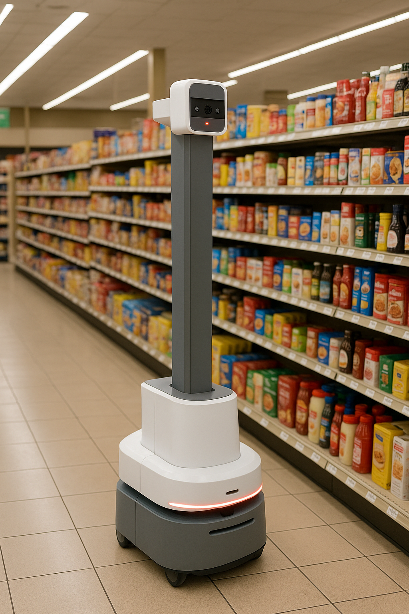
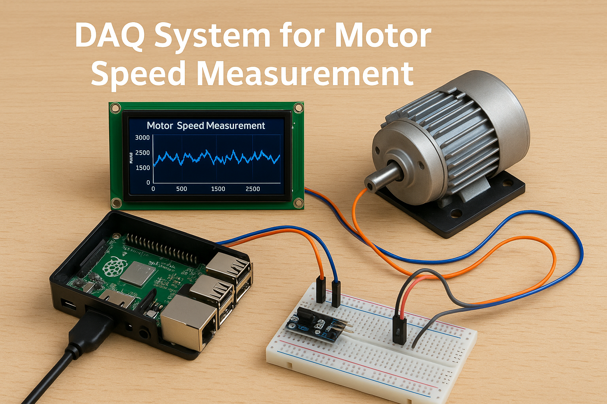
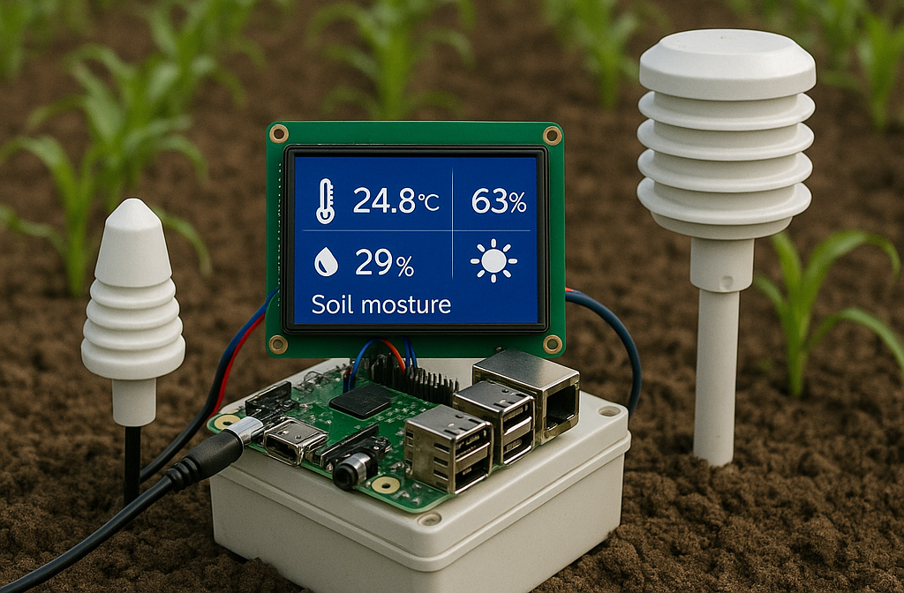
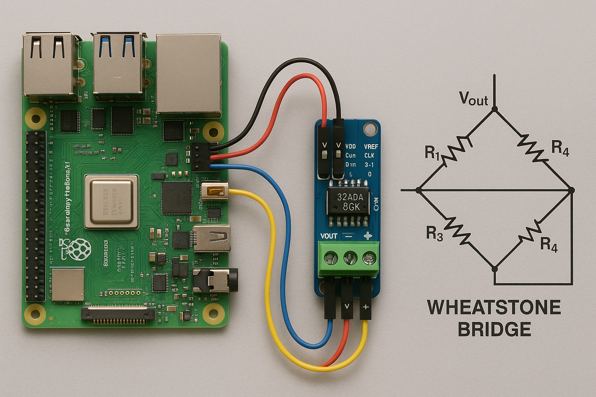
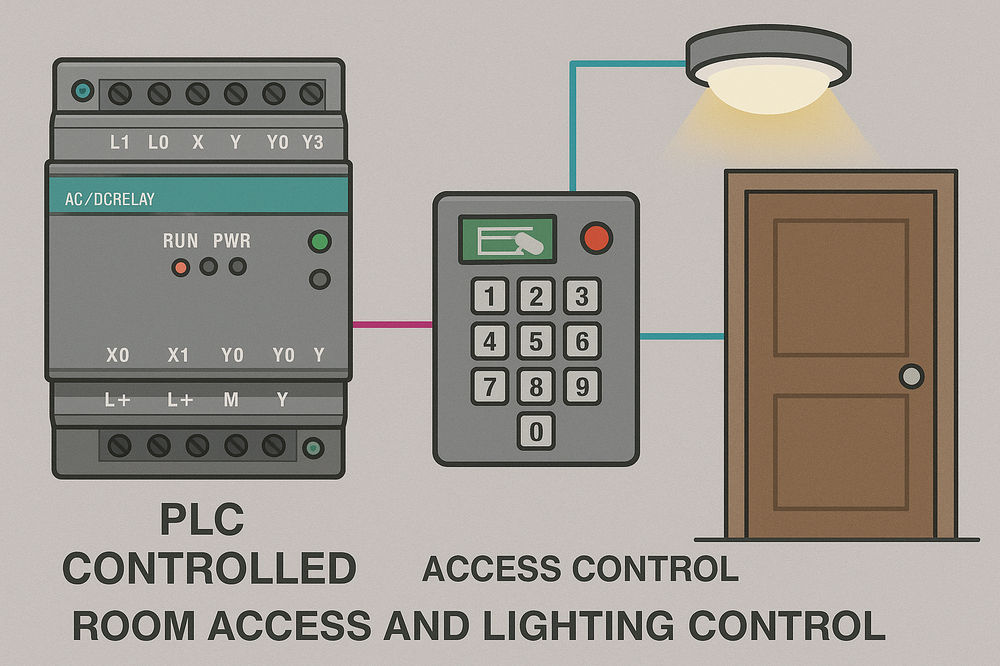
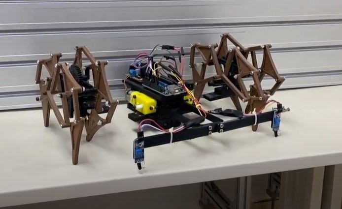
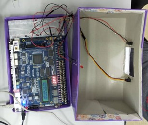

2025
This is an FYP project. This project was created to solve problems regarding retail out-of-stock issues.
Built With:

Image is AI Generated

Designed and programmed a Raspberry Pi 4 as a DAQ unit to capture and visualize real-time data as part of a lab requirement.
Designed the circuit required to filter noise above 50Hz using low-pass filter according to the motor output.
Built as a way for me to implement filters and understand the usage of buffer and impedance matching
Built With:

Developed User Interface and Dashboard for real-time data monitoring. Designed schematic diagrams and electrical layout for electrical connections.
Identified Control Sequence for solenoid and motor control for appropriate response to sensor data.
Built to solidify my understanding of Python programming and electrical connections
Built With:

Developed Python program for SPI communication between Pi 4 and MCP3202 ADC.
Designed and built a wheatstone bridge for thermistor and utilized buffer for signal integrity.
Built to solidify my understanding of Python programming and electrical connections
Built With:

Utilized OMRON PLC with Ladder Diagram to control room access and lighting. Utilzied Shinlin HMI for GUI.
Developed 4-bit password for administrator access to PLC
Built to solidify my understanding of PLC ladder programming and electrical connections
Built With:

Theo Jansen mechanism for walking robot. Utilized IR sensor to keep robot within track
Built with Arduino and utilized Interrupts for IR sensors. Here is a demo of the robot.
Modular design to allow easy access between walking mechanism and control system.
Built With:

FPGA-based intruder detection system. Programmed in Verilog to detect IR break beam sensor data and produce buzzer output.
Designed Verilog program to control 7-segment display and sensor interface. Here is the demo
Built to learn about Verilog and how to implement flags in programs.